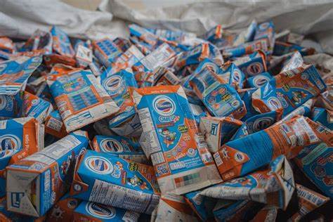
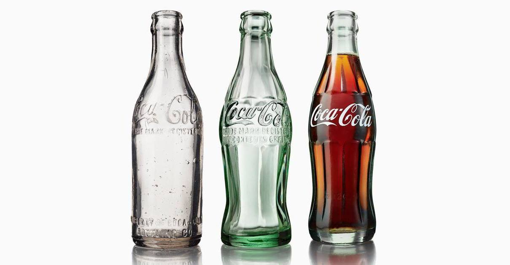
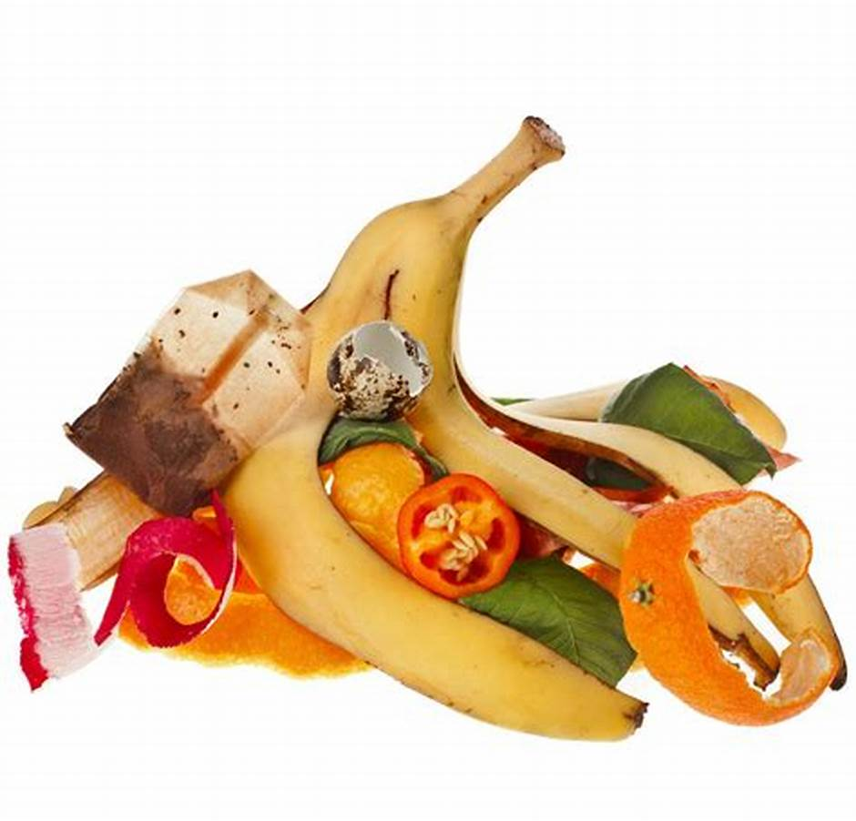
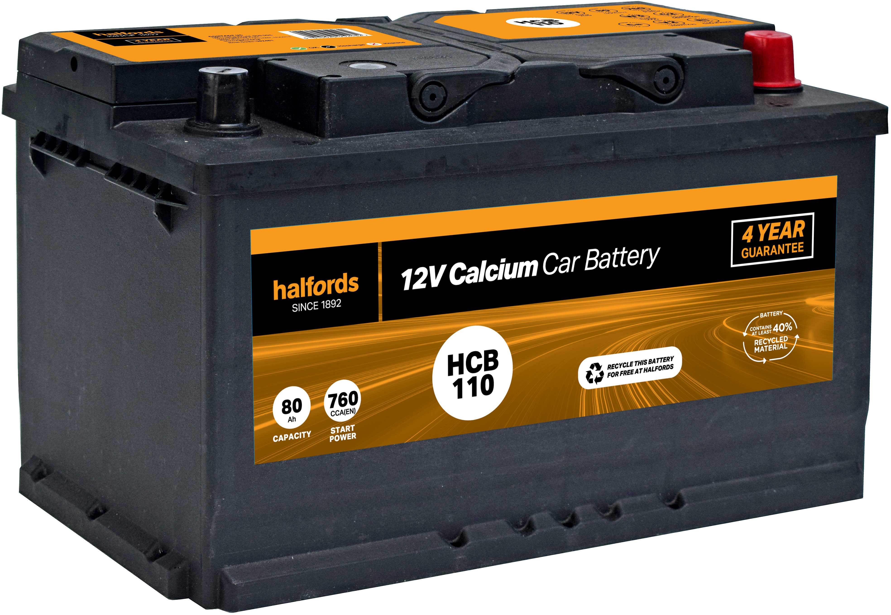
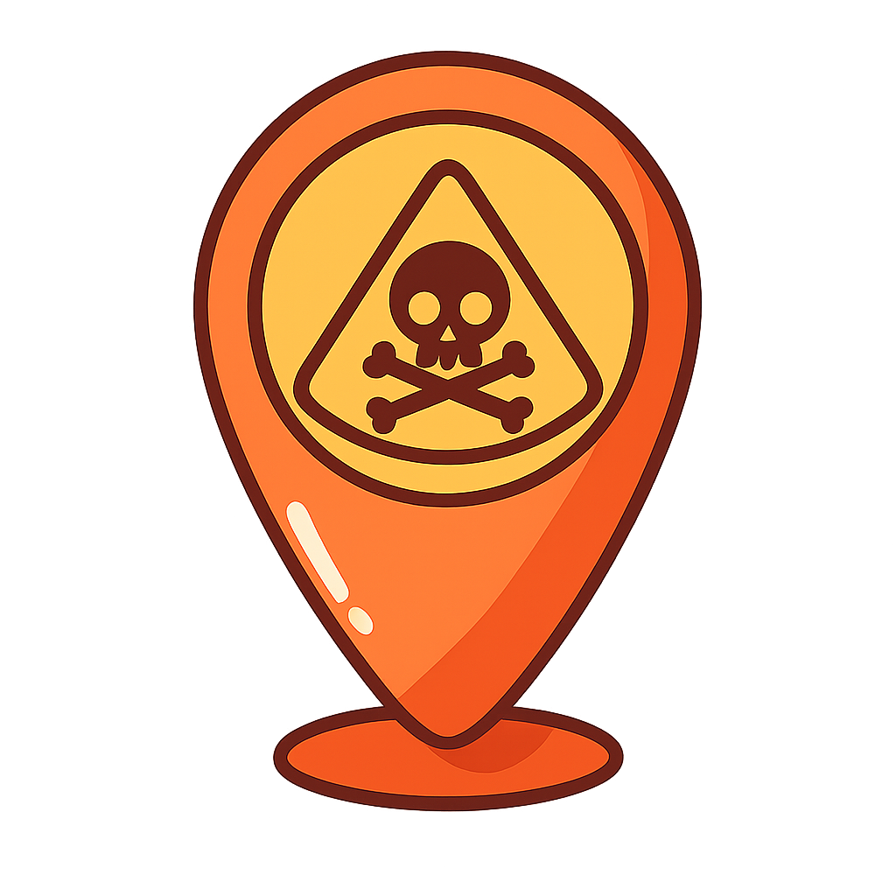
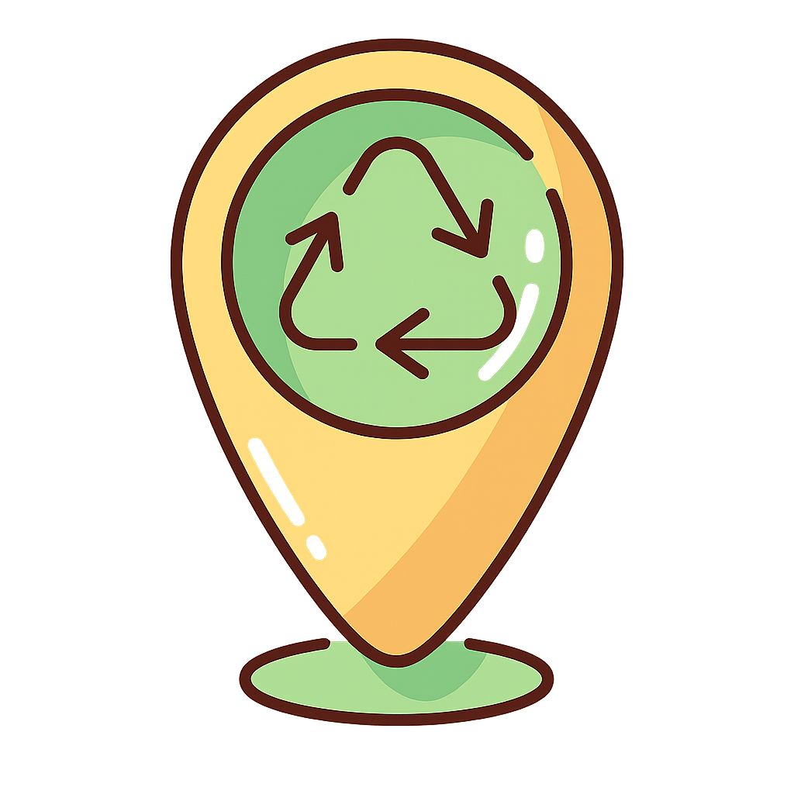
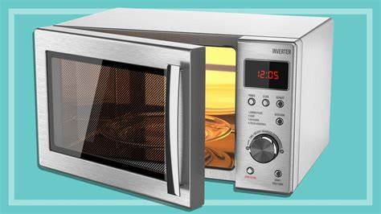

โพสต์ของคุณได้รับการอนุมัติแล้ว
3 พ.ย. 2026 14:20 (2 ชั่วโมงที่แล้ว)
มีความคิดเห็นใหม่ในโพสต์ของคุณ
3 พ.ย. 2026 09:05 (7 ชั่วโมงที่แล้ว)
เรียนรู้วิธีจัดการขยะแต่ละประเภทอย่างถูกวิธี (ข้อมูลตัวอย่าง)







ลองเปลี่ยนคำค้นหาหรือตัวกรองดูนะ